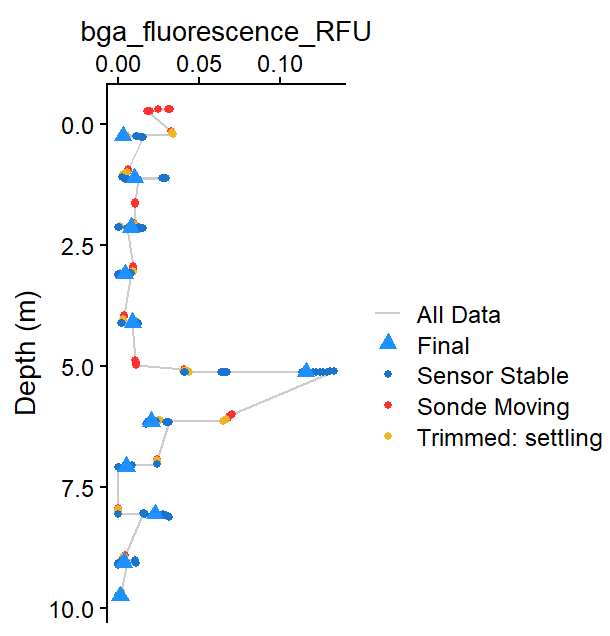

TROLL Profiles Quick Start
TROLL-QuickStart.RmdQuick Start
library(ImportUtils)
# Example data (replace with your own file path)
path_to_raw <- system.file("extdata", "TROLL_exdata.csv", package = "ImportUtils")
## Run the full workflow
dat <- TROLL_profile_compiler(
path = path_to_raw,
stn_secs = 24 # adjusted for this dataset
)
# View summarized output
summary <- dat$Summary_Data
summary
#> # A tibble: 9 × 8
#> stationary_depth sp_conductivity_uScm temperature_C pH_units DO_mgL
#> <dbl> <dbl> <dbl> <dbl> <dbl>
#> 1 0.085 66.8 18.0 7.26 9.85
#> 2 1.04 66.6 18.1 7.41 9.86
#> 3 1.94 66.3 17.5 7.33 9.68
#> 4 2.90 66.7 16.1 7.00 9.09
#> 5 3.91 65.7 15.3 6.74 8.02
#> 6 4.88 67.2 12.7 6.53 6.43
#> 7 5.84 66.9 10.6 6.36 5.08
#> 8 6.82 67.0 9.83 6.12 4.05
#> 9 7.68 68.9 9.52 5.84 2.38
#> # ℹ 3 more variables: chlorophyll_RFU <dbl>, turbidity_NTU <dbl>,
#> # bga_fluorescence_RFU <dbl>NOTE: This example uses stn_secs = 24
because the included dataset has short stationary periods.

Figure 1: Example output showing compiled profile data for BGA (RFU).If results are not as expected:
- Missing depths –> decrease
stn_secs - Noisy non-optical parameter data –> adjust
stbl_range_thresholds - Want to inspect behavior –> rerun with
plot = TRUE
For more control, see the Tuning Troll Workflow vignette.